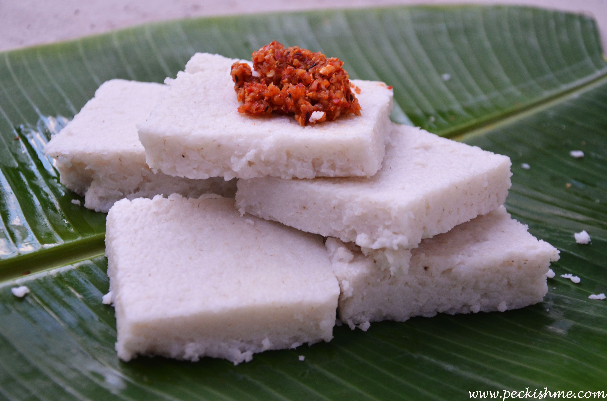

Explore our collection of delightful recipes and get ready to indulge in a world of flavors. You can select the best sri lankan food recipes for your helath from here.

Milk Rice
Ingredients
- Ingredient 1 - Rice
- Ingredient 2 - Coconut Milk
- Ingredient 3 - Chilie
Cooking Instructions
- Step 1: wash and steam rice for 15 mins
- Step 2: Add Coconut milk & boil it for 20 mins
- Step 3: Then enjoy it with chilie .